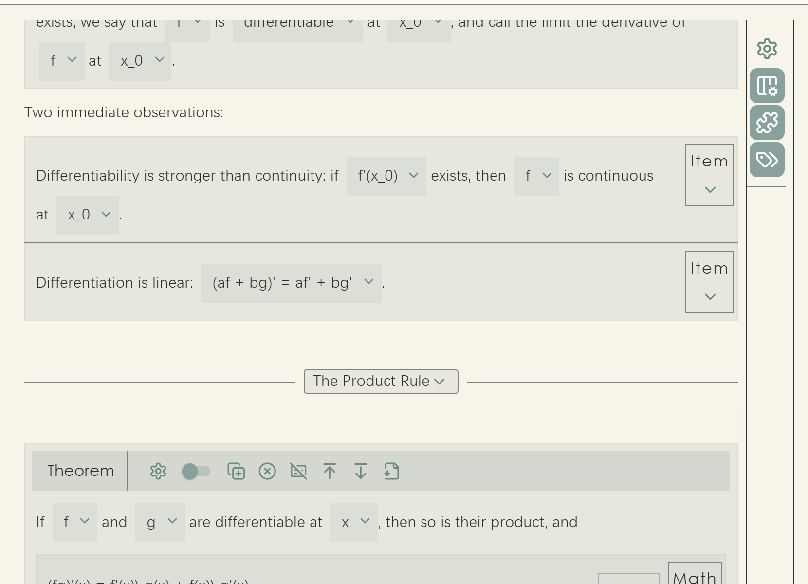
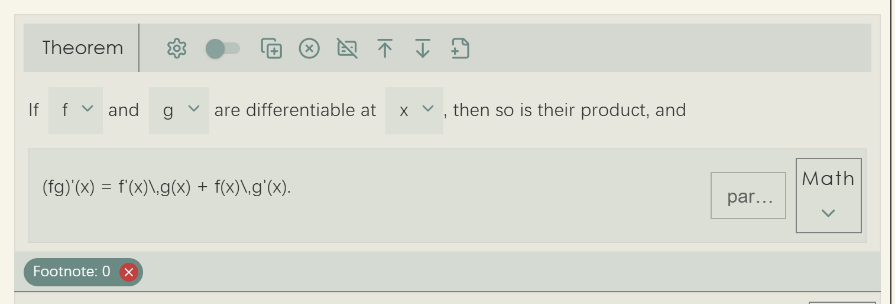
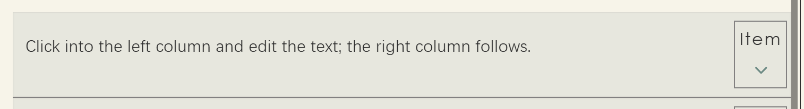
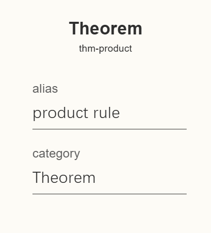
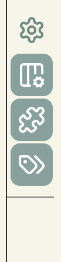
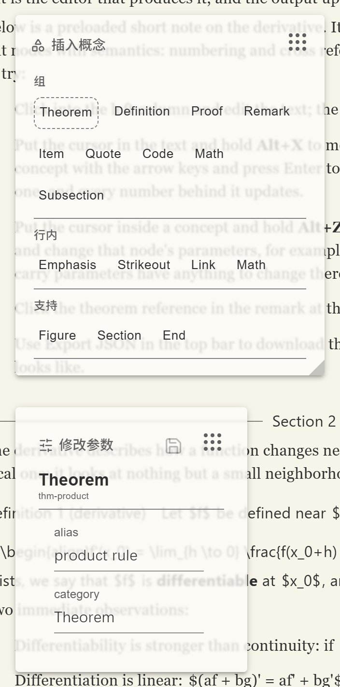

The Editing Interface
This page goes through the default editor's interface block by block: how the screen divides, what each of the buttons on a node does, how parameters get edited, where abstract nodes live, what the sidebar holds, and finally the two floating panels together with the container you have to place yourself.
How the screen divides
The default editor splits the rectangle it is given into left and right. About nine tenths of the width on the left is the paper, the document content itself; the narrow strip that remains on the right is the sidebar, holding buttons that act on the document as a whole. The ratio shifts a little with screen width, giving the sidebar proportionally less on wider screens, since there are only a handful of buttons and they gain nothing from growing with the window.
Beyond that there are the two floating panels, Insert Concept and Edit Parameters. They take no part in the left-right division; they float above the interface and can be dragged and resized. Which region they float over is up to you, which is the subject of the last section on this page.

Nodes on the paper
Every concept node on the paper carries its own row of buttons. There are two arrangements: spread across an appbar at the top of the node, or collected into a strip on the right and folded behind a chevron. Which one a concept gets is decided by the renderer factory it uses, covered in Editor Renderer Factories.


Either way the buttons themselves are the same eight:
| Button | Role |
|---|---|
| Edit parameters | Opens the parameter drawer to edit this node's parameters in place |
| Chaining switch | Toggles the node's relation, whether it is separated from or chained to the previous node |
| Copy node | Copies the node together with its whole subtree |
| Delete node | Deletes the node and its content |
| Unwrap node | Deletes the node itself but keeps its content, commonly called a soft delete |
| Add paragraph above | Inserts an empty paragraph before the node |
| Add paragraph below | Inserts an empty paragraph after the node |
| New abstract | Attaches an abstract node, a footnote for example, to this node |
The chaining switch corresponds to the relation property from tutorial chapter 1. Two
adjacent nodes of the same kind are numbered independently and spaced apart when separated; when chained,
the second sits flush against the first and the two read as one run. A list of items usually wants
chaining, two unrelated theorems want separation.
The two "add paragraph" buttons deserve a sentence more, because they solve a problem peculiar to structured editors. In a plain text editor the cursor can always go between any two characters; in a tree-shaped document, if two block nodes are direct neighbours there is simply no position between them where a cursor could go, and therefore no way to insert anything in between. These buttons create such a position out of nothing: add an empty paragraph first, then write into it.
Unwrap is worth a mention too. When you delete a theorem, what you usually want to remove is the fact that it is a theorem, not the sentence inside it. Unwrap does exactly that: the node disappears and the content stays where it was, as ordinary paragraphs.
The parameter drawer
The Edit parameters button unfolds a drawer from the node listing all of its parameters.

alias is its byname and category
decides whether it counts as a theorem or a lemma. The panel titles are in Chinese because the
default implementation's own interface strings are not yet translated.
The control each parameter gets is decided by its type and its extra fields:
| Parameter | Control |
|---|---|
Has a choices field | A dropdown whose options are the choices array |
string | A text field |
number | A number field |
boolean | A switch |
Note the order: choices takes precedence over type. A parameter typed string
that carries choices renders as a dropdown rather than a text field. The Proposition concept
in tutorial chapter 7 relies on this to turn category into a choice between Theorem, Lemma
and Corollary.
Parameters pinned by a second-class concept through fixed_override do not appear here, since
authors are not meant to change them in the first place. This is where the practical difference between
fixed and default parameters shows: the former are part of the concept, the latter merely a starting
point.
Abstract nodes
Abstract nodes attached to a node (footnotes, for instance) appear as a row of small chips below it. Clicking one opens a floating window to edit it. That window is an independent editor component sharing the main editor's core, so the concepts available inside a footnote are exactly those available in the body.
This also explains why abstract nodes are not edited inline: an abstract node is a complete little document of its own, with its own paragraphs and possibly its own theorems. There is no room for that between two lines of running text, and a separate window is the natural place for it.
The sidebar
The sidebar carries four fixed buttons, all of which act on the whole document or the whole interface rather than on one node:

| Button | Role |
|---|---|
| Root parameters | Edits the parameters of the document's root node, its title for example |
| Parameter area | Shows or hides the Edit Parameters panel |
| Concept area | Shows or hides the Insert Concept panel |
| Show hints | The master switch for key hints, on by default |
The last one governs whether shortcut hints appear at all. It is on by default, so holding Alt by itself for a moment makes each button show the key that reaches it; with it off, holding Alt produces nothing. Turning it off once the shortcuts are familiar makes for a quieter screen. The hint mechanism is covered in detail on the Keyboard Operation page.
Buttons you add yourself come after these four, separated by a divider; see Customizing the Default Editor for how.
The two floating panels
The Insert Concept panel lists every second-class concept currently available, grouped by node kind; clicking one inserts it at the cursor. The Edit Parameters panel shows the parameters of the concept node the cursor is in, applied when you press save. Both can be dragged around and resized from the bottom right corner, and both remember position and size in the browser's local storage, so they come back where you left them.

Their relationship with the sidebar buttons is that the buttons control visibility while the panels themselves are a permanent workspace. They float rather than occupying a fixed side because inserting concepts and editing parameters are both frequent operations: a fixed panel would squeeze the text, and a menu would be too slow.
AreaContainer: the one part you must place yourself
Both panels are rendered by the editor component internally, but their positioning depends on an external
container: a panel places itself within that container's coordinate system and cannot be dragged outside
it. That container is AreaContainer, and you have to render it.
AreaContainer exists on the page, the two floating panels do not appear. There is no
error, nothing simply happens, which makes it easy to go looking for the fault somewhere else.
AreaContainer renders as an absolutely positioned empty box filling its parent, with no
appearance of its own. You are using it to mark out a rectangle and tell the panels they may move around
inside it. Where you put it depends on which region you want them to float over. If the editor and the
printed output sit side by side, the printer side is a good choice, so the panels float over the output
and never cover the text being edited:
import { AreaContainer, DefaultEditorComponent, DefaultPrinterComponent } from "@project-callio/calliotext"
<Box sx={{position: "relative", width: "100%", height: "100%"}}>
<Box sx={{position: "absolute", left: 0, width: "50%", height: "100%"}}>
<DefaultEditorComponent editorcore={editor_core} />
</Box>
<Box sx={{position: "absolute", left: "50%", width: "50%", height: "100%"}}>
{/* The container fills the printer column, so that is where the panels may move. */}
<Box sx={{position: "absolute", top: 0, left: 0, width: "100%", height: "100%"}}>
<AreaContainer />
</Box>
<DefaultPrinterComponent printer={printer} root={tree} />
</Box>
</Box>